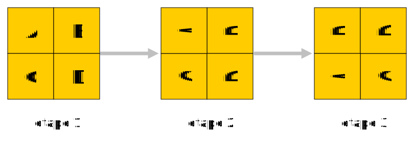

Diviser pour régner⚓︎
Un exemple déjà traité⚓︎
 Nous avons
déjà rencontré des situations où l'on appliquait cette stratégie.
Nous avons
déjà rencontré des situations où l'on appliquait cette stratégie.
La plus marquante était sans doute celle des tours de Hanoï dont voici un script de résolution :
def hanoi(n: int, depart: str, interm: str, dest: str) -> None:
if n > 0:
hanoi(n - 1, depart, dest, interm)
print("Déplacer un palet de", depart, "vers", dest)
hanoi(n - 1, interm, depart, dest)
L'appel
hanoi(3, 'A', 'B', 'C')
affiche
Déplacer un palet de A vers C
Déplacer un palet de A vers B
Déplacer un palet de C vers B
Déplacer un palet de A vers C
Déplacer un palet de B vers A
Déplacer un palet de B vers C
Déplacer un palet de A vers C
Le principe⚓︎
L'exemple précédent est caractéristique de la stratégie «diviser pour régner», qui consiste à
-
Décomposer un problème en un ou plusieurs sous-problèmes de même nature mais plus petits.
-
Résoudre les sous-problèmes, généralement de manière récursive, jusqu'à ce qu'on arrive aux cas d'arrêt : des sous-problèmes que l'on sait résoudre immédiatement.
-
Construire la solution au problème initial à partir des solutions des sous-problèmes.
Le tri fusion⚓︎
Principe⚓︎
 Voici un deuxième exemple d'application de cette stratégie : le tri
fusion. On doit cet algorithme à
John Von Neumann.
Voici un deuxième exemple d'application de cette stratégie : le tri
fusion. On doit cet algorithme à
John Von Neumann.
On dispose d'une liste d'entiers que l'on veut trier dans l'ordre croissant.
-
On scinde cette liste en deux listes de longueurs «à peu près égales».
-
On trie ces listes en utilisant... le tri fusion.
-
On fusionne les deux listes triées par ordre croissant pour ne plus en obtenir qu'une.
Une chorégraphie du tri fusion
Voici comment coder le tri fusion :
On a tout d'abord besoin d'une fonction scinde qui renvoie la première moitié et la deuxième moitié de la liste qu'on
lui passe en argument.
def scinde(lst: list) -> tuple:
return lst[:len(lst) // 2], lst[len(lst) // 2:]
Ensuite, on a besoin d'une fonction fusion qui, étant donnée deux listes triées, les fusionne.
def fusion(lst1: list, lst2: list) -> list:
if not lst1 or not lst2: # si l'une des listes est vide
return lst1 or lst2 # alors on renvoie l'autre
else:
a, b = lst1[0], lst2[0]
if a < b : # sinon on compare leurs premiers éléments
return [a] + fusion(lst1[1:], lst2) # on place le plus petit en tête et on fusionne le reste
elif b > a:
return [b] + fusion(lst1, lst2[1:])
else : # dans le cas où les 2 éléments sont égaux on peut les placer tous les deux
return [a, b]+ fusion(lst1[1:], lst2[1:])
Enfin, la fonction tri_fusion.
def tri_fusion(lst: list) -> list:
if len(lst) < 2: # cas d'arrêt
return lst
lst1, lst2 = scinde(lst) # sinon on scinde
return fusion(tri_fusion(lst1), tri_fusion(lst2)) # et on fusionne les sous-listes triées
Complexité du tri fusion⚓︎
Notons \(n\) la taille de la liste à trier et considérons comme seule opération élémentaire le fait d'accéder à un élément d'une liste.
En classe de Première, nous avons étudié des algorithmes de tri dits «lents», car de complexité quadratique : pour une liste de taille \(n\), le nombre d'opérations élémentaires pour trier ce tableau est «de l'ordre de \(n^2\)».
Ainsi, pour trier une liste de \(10^6\) entiers avec le tri par sélection (par exemple), le nombre d'opérations élémentaires nécessaires est de l'ordre de \(10^{12}\).
Complexité du tri fusion
Le nombre d'opérations élémentaires nécessaires pour trier une liste de taille \(n\) par la méthode du tri fusion est de l'ordre de \(n\times\ln n\).
\(\ln n\) est le logarithme néperien de \(n\) mais peut être remplacé par le logarithme en base 2 ou en base 10 sans changer les ordres de grandeur.
Exemple
Pour trier une liste de \(10^6\) entiers, il faudra de l'ordre de 6 millions d'opérations élémentaires.
Vérification expérimentale
Rotation d'une image carrée d'un quart de tour⚓︎
On suppose qu'on dispose d'une image carrée de côté \(n\) pixels, où \(n\) est une puissance de 2.
Pour l'exemple voic une photo (colorisée) carrée d'Alan Turing de côté 512 pixels.
On aimerait faire subir un quart de tour à cette photo (dans le sens antihoraire) en utilisant une stratégie de type «diviser pour régner». On va procéder ainsi :

- On partage l'image en 4 carrés de côté deux fois moindre.
- On fait tourner ces 4 carrés.
- On fait subir une permutation circulaire aux 4 carrés
À l'étape 2, pour faire tourner les 4 carrés, on se retrouve avec le même problème mais avec des carrés de côté 2 fois plus petits. On répète donc le processus jusqu'à n'avoir plus que des carrés de côté 1 pixel (sur lesquels il n'y a pas besoin de faire quoi que soit).
Voici ce que cela donne
Programmation de la rotation d'un quart de tour d'une image carrée
Exercices⚓︎
Exercice : Recherche dichotomique
-
Expliquer pourquoi la recherche dichotomique d'un élément dans une liste d'entiers triés dans l'ordre croissant peut être vue comme un exemple de stratégie «diviser pour régner».
-
Programmer la recherche dichotomique de manière récursive.
Solution
Pour savoir si un élément appartient à la liste, on regarde celui qui est «à peu près au milieu». Si c'est le bon c'est terminé, sinon on fait de même avec la sous-liste des éléments précédents et avec celle des éléments suivants.
def rech_dicho(lst, elt):
n = len(lst)
if n < 2:
return elt in lst
elif lst[n // 2] == elt:
return True
else:
return rech_dicho(lst[:n // 2], elt) if lst[n // 2] > elt else rech_dicho(lst[n // 2 + 1:], elt)
Algorithme de Karatsuba
Il s'agit d'un algorithme qui applique la stratégie « diviser pour régner » pour effectuer des multiplications de manière efficace.
- Chercher sur Internet ce qu'est cet algorithme.
- Programmer cet algorithme en Python.
Voir des indices
Si \(x\) et \(y\) s'écrivent au plus avec \(2n\) bits, alors on peut les écrire \(\begin{cases} x &= a\times 2^n + b\\ y &= c\times 2^n +d\\ \end{cases}\) , où \(a\), \(b\), \(c\) et \(d\) s'écrivent au plus \(n\) bits.
Mais alors \(x\times y = ab2^{2n}+(ac + bd -(a-b)(c-d))2^n+bd\).
Dans cette écriture, il y a 3 multiplications à faire avec des nombres s'écrivant avec au plus \(n\) bits:
- \(ac\)
- \(bd\)
- \((a-b)(c-d)\)
Le reste (additions et multiplication par \(2^{2n}\) ou \(2^n\) ne prend pas beaucoup de temps à faire (les additions sont plus rapides que les multiplications et multiplier un nombre par \(2^n\) revient à lui ajouter \(n\) bits valant 0 à droite).
La stratégie « diviser pour régner » vient du fait qu'on calcule ces 3 produits en appliquant de nouveau l'algorithme de Karatsuba.
On peut déjà code une fonction size qui
- en entrée prend un int x;
- renvoie le nombre de bits de l'écriture binaire de x.
Pour ce faire il suffit de diviser x par 2 (avec //) jusqu'à trouver 0.
- Pour multiplier
xpar \(2^n\) on peut utiliser l'opérateur<<:x << n. - Pour diviser, utiliser
>>. - Ainsi on pourra écrire
Et caetera.
a = x >> (2 ** n) b = x % (2 ** n)